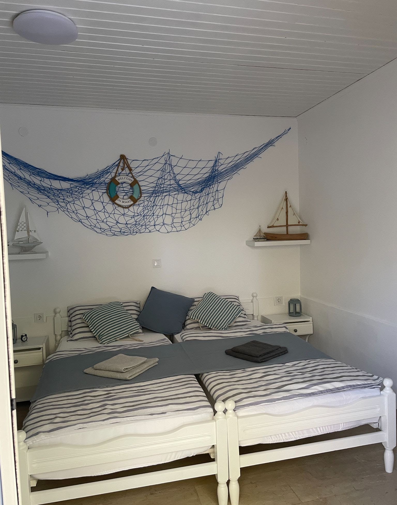
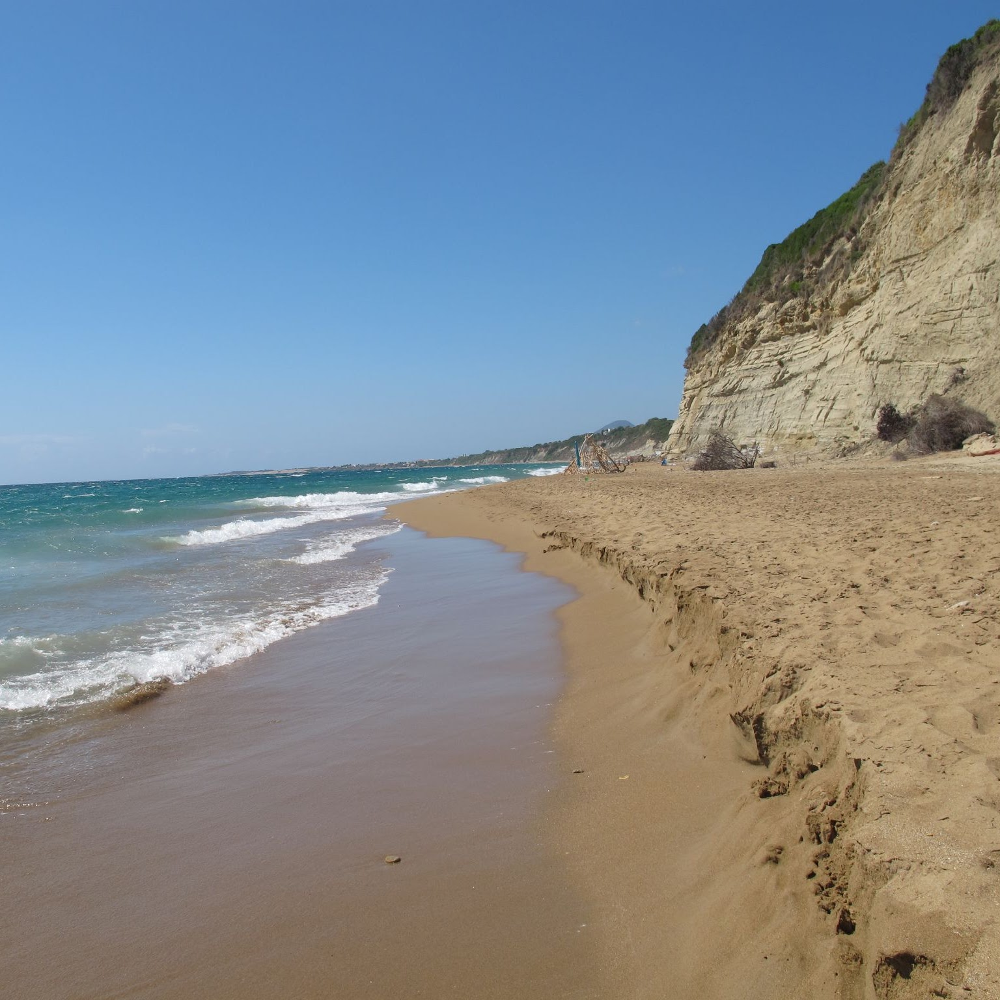
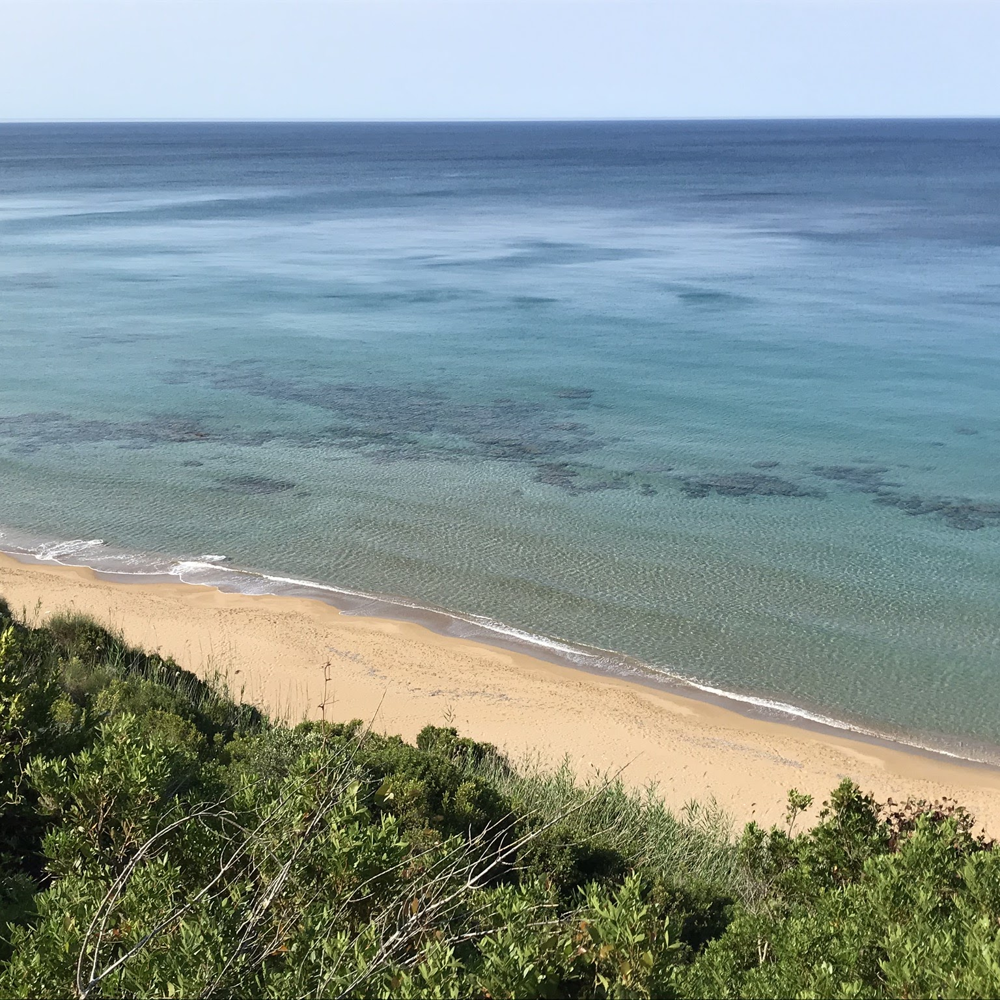
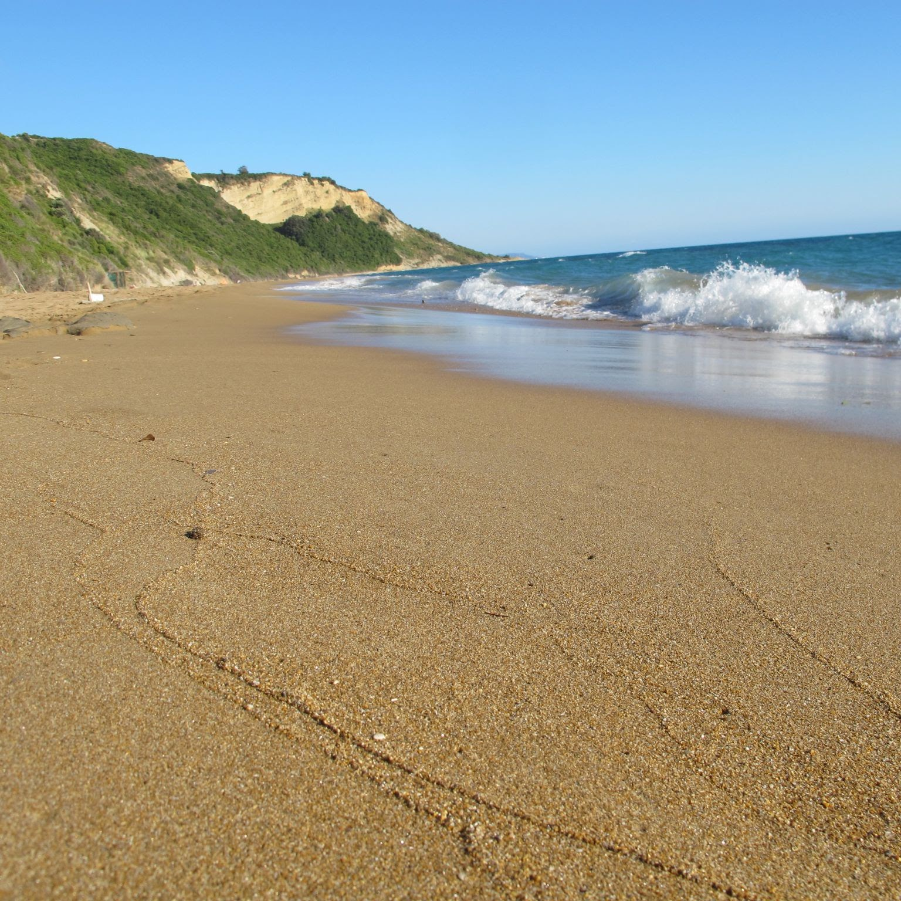

východ · větší terasa
Studio Filemon
Příjemný odpolední stín. Terasa je větší.
Ideální na pomalé snídaně. Vybavení a všechna fota →
Řecko · ostrov Korfu · 2026
Dovolujeme si vás oslovit s nabídkou pobytu v našem domě na jihu Korfu. Kohout, ovce, koza od sousedů — žádná technopárty. Klidná a pohodová dovolená ano.

Dům, ne hotel
Dvě studia v naprosto klidné oblasti. Délku pobytu si volíte sami, minimum je pět nocí.
Na písečnou pláž s pozvolným vstupem je to 650 metrů. Cestou tři taverny a dva obchůdky. Nebo olivovým hájem přes útes — výhledy na moře za to stojí.
Na pláži rušnější část u barů, nebo kus dál skoro sami pod útesem. Na hlavní pláži výlety po moři, kajak, člun. Lehátko se slunečníkem k objednané kávě nebo pivu.


Santa Barbara / Marathias
Taverna 80 m, obchůdek 250 m, LIDL a Masoutis 4,5 km.
Korfu i okolní ostrovy nabízejí spoustu výletů — rádi poradíme. Na cestování po ostrově se hodí květen, červen, září a říjen.
Sezóna 2026
Nově přímé lety Praha–Korfu od května až do října. Termín si vyberete v kalendáři — není to automatická rezervace. Ozvete se a my volné dny potvrdíme. Transfer z letiště 40 € (max. 4 osoby), zpáteční 80 €.
Jméno domu
Stařečci z báje nabídli hostům všechno, co měli. My chceme férový poměr cena / pohoda.
Když nějakou informaci nenašli, není to proto, že bychom chtěli něco zatajit — prostě nelze myslet na všechno.
Takhle nás vidí opeřenci:
Kontakt
Když se nedovoláte, zkuste WhatsApp nebo Viber. Mobilní signál občas kolísá.